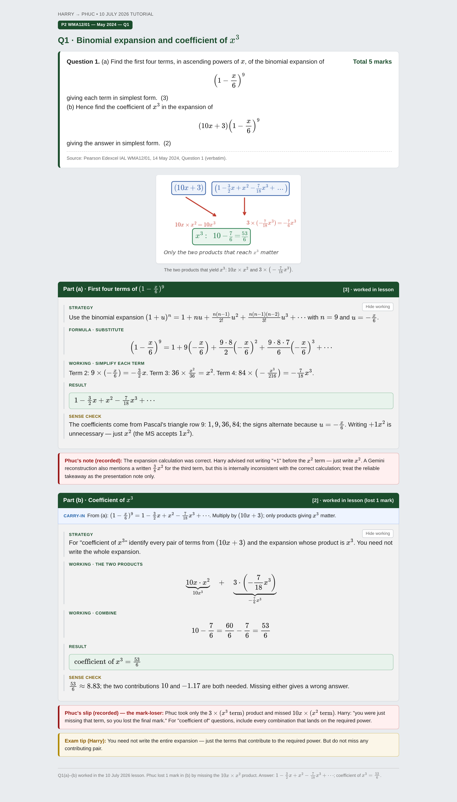
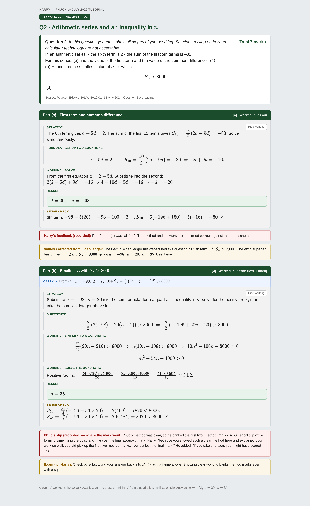
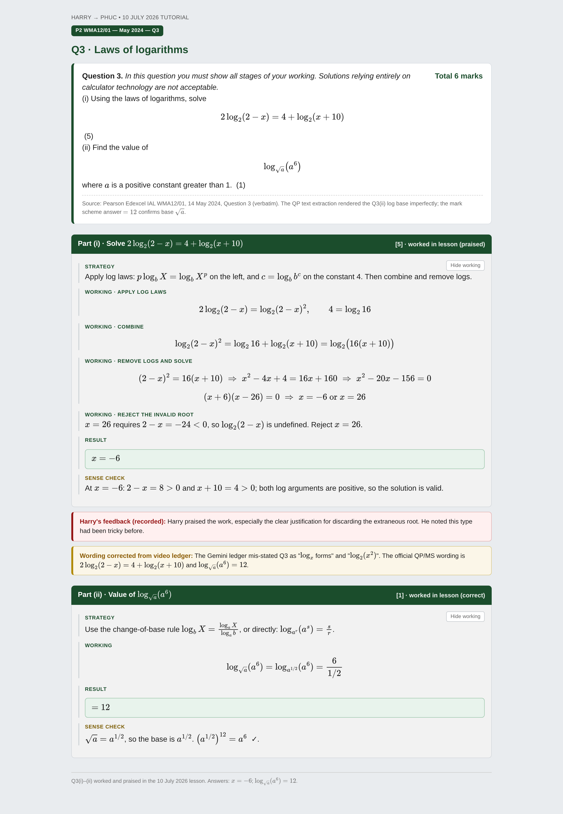
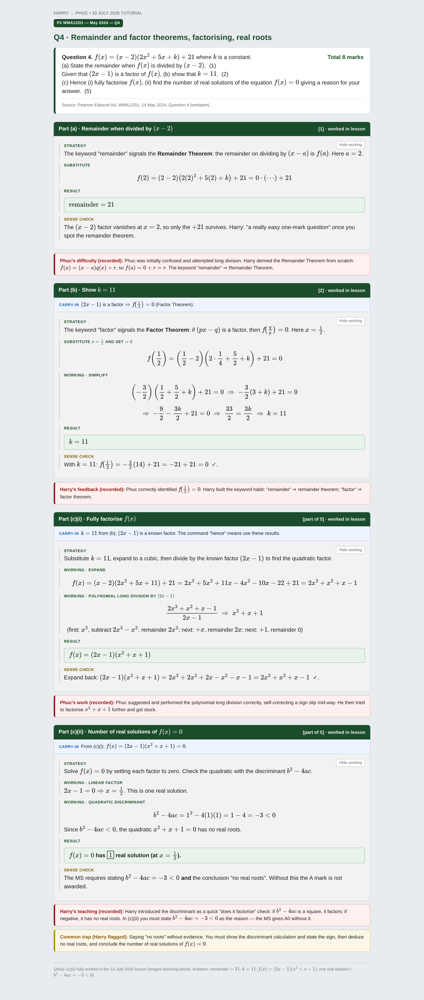
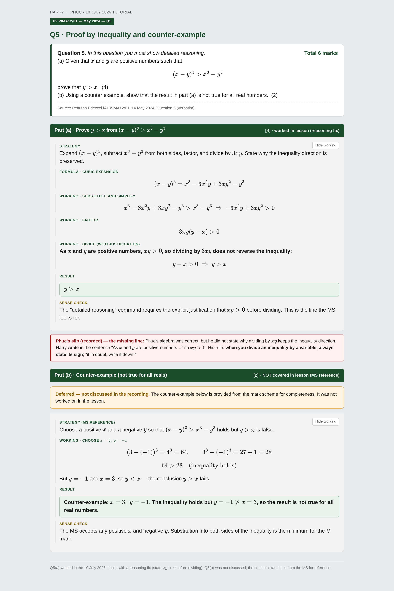
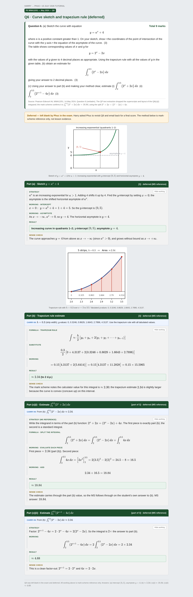
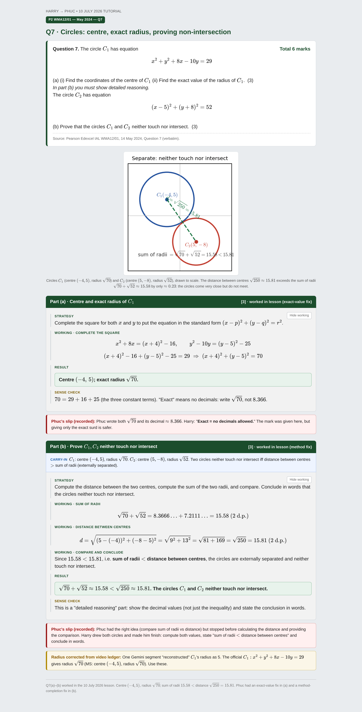
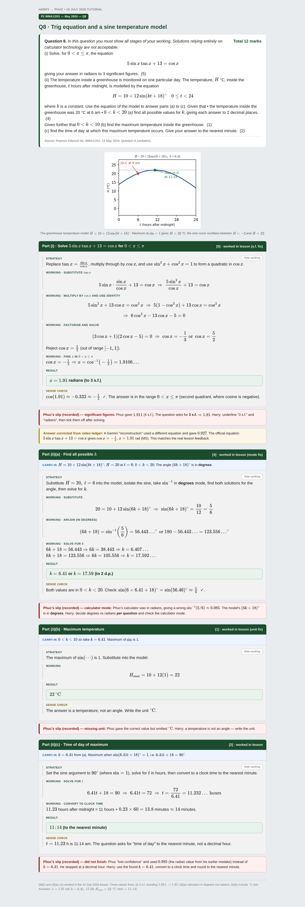
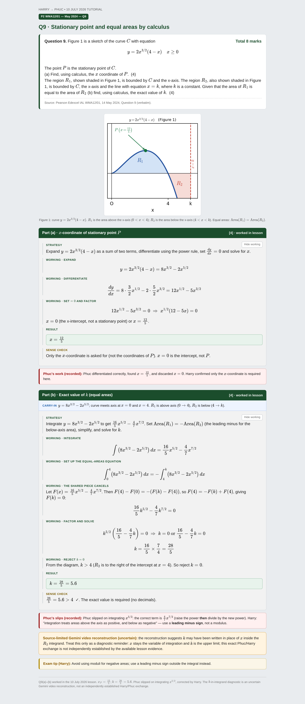
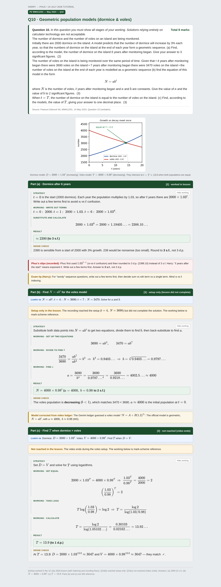

Ten multi-step cards for the Pearson Edexcel IAL Pure Mathematics P2 paper (WMA12/01, Tuesday 14 May 2024). Each card shows the exact official question wording, visible part headers and marks, carry-ins for later parts, grey maskable working boxes, and Harry's method and the exact places marks were won or lost in the recorded lesson.









